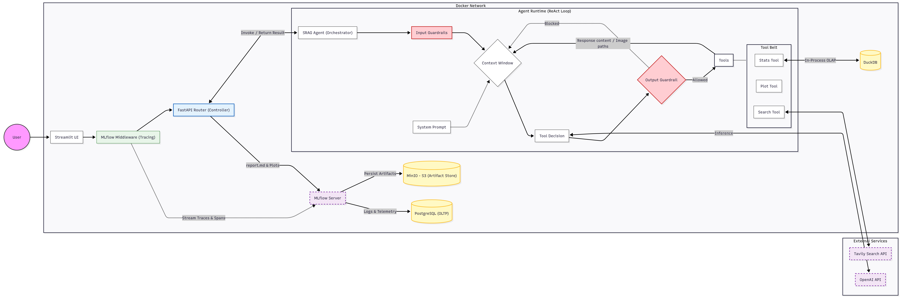
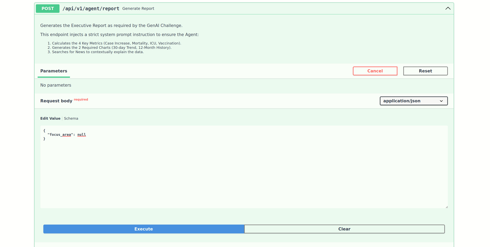
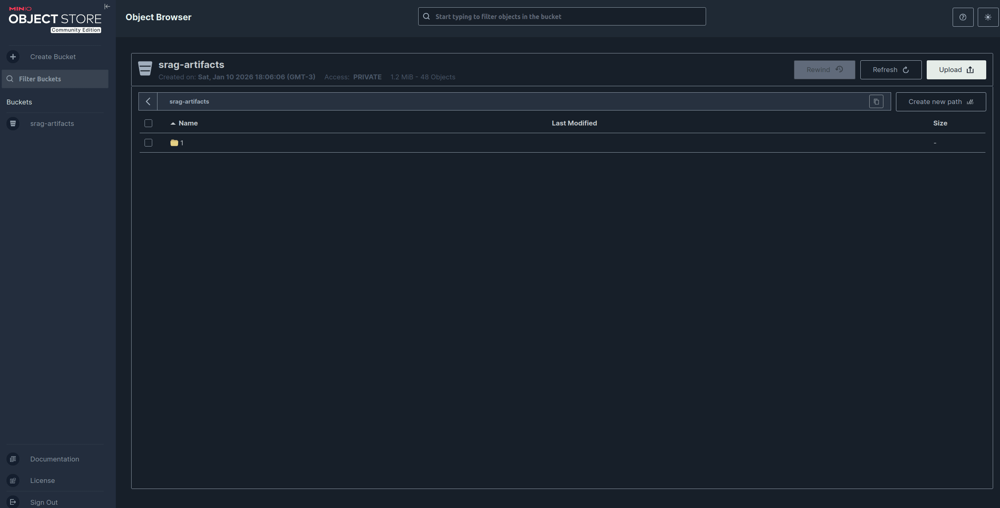
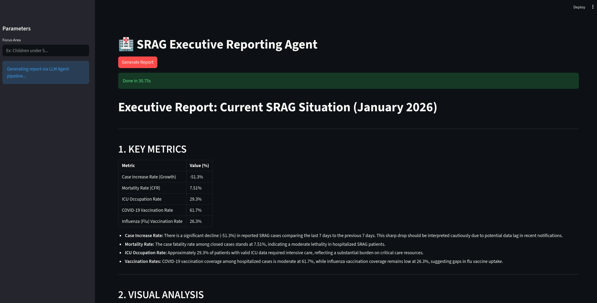

SRAG Insight Agent: Automated Healthcare Reporting Engine


Proof of Concept for Indicium HealthCare Inc.
Executive Summary
This repository contains a Generative AI solution designed to generate real-time, data-driven reports on Severe Acute Respiratory Syndrome (SRAG).
Developed as a Proof of Concept (PoC) to evaluate the feasibility of automated epidemiological monitoring, this solution establish a Agentic Architecture. The system orchestrates a Large Language Model (LLM) to autonomously query high-volume healthcare datasets (Open DATASUS), visualize trends, and contextualize findings with real-time news retrieval.
The core philosophy of this implementation is Pragmatic Engineering: balancing the cutting-edge capabilities of Agentic AI with the reliability, type safety, and observability required for enterprise software.
Architectural Strategy & Decision Making
To ensure the solution is scalable, auditable, and maintainable, the following architectural decisions were prioritized to meet the evaluation criteria:
1. The Reasoning Engine: ReAct + Chain-of-Thought
Criteria: Architecture selection
Instead of a complex Multi-Agent System (which often introduces unnecessary latency and orchestration overhead for this scope) or a rigid linear chain (which lacks flexibility), a ReAct (Reason + Act) Agent was implemented using PydanticAI.
- Why: The problem requires the AI to iteratively "think" about the data it finds, decide if it needs more granularity, and then act.
- Implementation: We inject Chain-of-Thought reasoning directly into the system prompt. This allows the agent to reason about tool outputs, SQL query results, chart generation, and news articles, before synthesizing the final report.
2. Governance & Transparency (Observability)
Criteria: Governance and Transparency
We implemented a full observability layer using MLflow backed by PostgreSQL and MinIO.
- Traceability: Every step of the agent's thought process, every tool call (SQL executed, search terms used), and the final output is logged.
- Artifact Management: Generated charts and markdown reports are versioned in MinIO (S3 compatible), while metadata is stored in Postgres (OLTP), ensuring full auditability of the "decisions" made by the agent.
3. Safety & Guardrails
Criteria: Guardrails and Sensitive Data Handling
We adhere to a "Security First" approach, implementing a Defense-in-Depth strategy that addresses data privacy across both storage and interaction layers, supported by PydanticAI-Guardrails for interaction-level enforcement:
- Data Minimization (Preprocessing): Before any data enters the analytical environment, we perform a strict selection of pertinent columns from the raw CSV. Sensitive Personal Identifiable Information (PII) such as Names and CPFs were explicitly discarded during the ETL process to DuckDB, as they are not necessary for the required aggregated metrics (mortality, occupation, vaccination rates and growth cases rate).
- Input Guardrails: We utilize Guardrails as an active interception layer. It scans user prompts for potential PII, prompt injection or any malicious intent before the LLM processes them.
- System Prompt Instruction: As a secondary safety net, the System Prompt is rigorously instructed to reject any request that attempts to solicit sensitive information, ensuring compliance even if a guardrail is bypassed.
- Output/Execution Guardrails: A custom validator intercepts tool execution, specifically for the SQL tool (
stats_tool). It ensures the agent cannot execute destructive commands (DROP,DELETE) or access restricted schemas within the Data Warehouse.
4. Tooling Strategy & Capabilities
Criteria: Use of Tools
The agent interacts with the environment through three strictly typed tools, designed to adhere to the Separation of Concerns principle. Each tool empowers the agent with a specific capability needed to fulfill the reporting requirements:
- Analytical Engine (
stats_tool): To handle the ~323k rows efficiently, we backed this tool with DuckDB (OLAP). This allows the agent to execute high-performance aggregation queries (SQL) to extract metrics (mortality, occupation, vaccination) in milliseconds, rather than struggling with slow Python-based data frame manipulation. - Visualization Engine (
plot_tool): A dedicated interface for generating trend charts (line/bar plots). - Context Retrieval (
tavily_search): To provide the real-time context required by the challenge, this tool connects to the Tavily API, allowing the agent to fetch external news about SRAG to ground its analysis in the current scenario.
Tech Stack & Tools
The stack was chosen to reflect modern Python engineering standards, prioritizing strong typing and reproducibility.
| Component | Technology | Reasoning |
|---|---|---|
| Orchestrator | PydanticAI | Provides a production-grade framework with Dependency Injection, strong type validation, and robust structured outputs. |
| API | FastAPI | High-performance, async-native REST API. Integrates natively with Pydantic for request/response validation. |
| Data Warehouse | DuckDB | In-process OLAP database optimized for analytical queries on the CSV dataset. |
| Observability | MLflow | Tracks agent runs, prompts, and tool usage metrics. |
| Storage | MinIO + Postgres | MinIO handles unstructured artifacts (plots/reports); Postgres act as a OLTP to handle structured telemetry/logs. |
| Containerization | Docker | Ensures full environment reproducibility and simplifies the orchestration of the multi-service architecture (API, MLflow, MinIO). |
| Web Search | Tavily | Optimized search API for LLMs to retrieve real-time news context. |
| Frontend | Streamlit | Rapid prototyping UI to demonstrate the agent's capabilities. |
| Documentation | Mkdocs | Treats documentation as code. Generates a static site from Markdown, ensuring technical docs live alongside the codebase. |
| Package Manager | UV | Chosen over Poetry/Pip for its superior resolution speed and unified project management. |
| Code Quality | Ruff + Pre-commit | Strict linting and formatting via pre-commit hooks to ensure PEP-8 compliance and Clean Code before every push. |
| --- |
Repository Structure
The project follows a Monorepo-style structure:
.
├── api
│ ├── main.py # FastAPI entrypoint & App Lifecycle
│ ├── src
│ │ ├── agents
│ │ │ ├── deps.py # Dependency Injection definitions
│ │ │ ├── orchestrator.py # Core ReAct Agent logic
│ │ │ └── prompts.py # System prompts & Dynamic instructions
│ │ ├── config.py # Environment variables & Settings
│ │ ├── db
│ │ │ ├── duckdb_connection.py # OLAP Database manager
│ │ │ └── minio_connection.py # Object Storage manager
│ │ ├── middleware
│ │ │ └── observability.py # MLflow tracking middleware
│ │ ├── routers
│ │ │ └── agent.py # API Routes (e.g., POST /report)
│ │ ├── schemas.py # Shared Pydantic models
│ │ ├── services
│ │ │ ├── ingest.py # ETL Pipeline (CSV -> DuckDB)
│ │ │ ├── manage_plots.py # Artifact handling logic
│ │ │ └── telemetry.py # Tracing implementation
│ │ └── tools
│ │ ├── plot.py # Graph generation
│ │ ├── search.py # Tavily Web Search wrapper
│ │ └── stats.py # SQL Generation & Validation
│ └── tests # Pytest Suite
│ ├── integration # End-to-end agent tests
│ └── unit # Security & Logic unit tests
├── assets # Architecture diagram & Demo GIFs
├── data
│ ├── plots # Local storage for generated charts
│ ├── processed # DuckDB database file (.db)
│ └── raw # Raw CSV input
├── docs # MkDocs documentation source
├── frontend
│ └── app.py # Streamlit User Interface
├── notebooks # Jupyter Notebooks (EDA & Prototyping)
├── docker-compose.yml # Service orchestration
├── Dockerfile # Application containerization
├── mkdocs.yml # Documentation configuration
├── pyproject.toml # Dependencies & Tool settings for UV
└── uv.lock # UV dependency lockfile
System Workflow & Engineering
The diagram below illustrates the end-to-end operational workflow, detailing the lifecycle of a report generation request:

Note: The Workflow Diagram is located on
assets/workflow.pdf
Operational Flow Overview
As visualized above, the architecture operates in four distinct stages:
- Request Ingestion: The User submits a request via the FastAPI entry point. The input passes through initial Guardrails (PII/Injection checks) before reaching the core logic.
- The ReAct Loop (Orchestrator): The PydanticAI agent initializes its reasoning loop. It analyzes the user's intent and autonomously decides which tools to invoke based on the System Prompt instructions.
- Tool Interaction & Feedback: The agent executes specific capabilities, querying DuckDB for metrics, generating plots via Matplotlib, or fetching news via Tavily. Crucially, the outputs of these tools are fed back into the agent's context, allowing it to "see" the results and refine its final answer.
- Asynchronous Telemetry: Parallel to the main thread, the Observability Layer captures every step. Traces, intermediate thoughts, and generated artifacts (images/markdown) are pushed to PostgreSQL and MinIO, ensuring full auditability.
The transition from a raw dataset to a production-grade Agent was driven by a methodical Research-to-Production lifecycle.
Before implementing the API, some experiments were conducted:
1. notebooks/1.0-eda.ipynb: Exploratory Data Analysis to understand the schema, identify missing values, and define the business logic for metrics (Mortality, ICU, Vaccination, growth cases rate and others).
2. notebooks/2.0-agent-prototyping.ipynb: A "lab environment" where we tested prompt engineering strategies, guardrails and tool definitions against the DuckDB instance to validate response quality before deployment.
1. Data Pipeline (ETL & Ingestion)
File: api/src/services/ingest.py
The system relies on a local Data Lakehouse architecture. On startup, the application ensures data integrity through a strictly typed ETL pipeline:
- Ingest: Downloads the official SRAG CSV (~323k rows) from the Open DATASUS S3 bucket.
- Transform (Label Encoding):
- Raw numeric codes (e.g.,
EVOLUCAO=1) are mapped to semantic labels (outcome_lbl='Cure'). - Why? LLMs struggle to memorize arbitrary numeric codes. By converting data to semantic strings during ETL, we significantly reduce hallucination rates in SQL generation.
- Raw numeric codes (e.g.,
- Load (DuckDB): The processed dataframe is persisted into a local DuckDB file (
srag_analytics.db). This file serves as the read-optimized source for the Agent.
2. The Orchestrator (Agentic Core)
File: api/src/agents/orchestrator.py
The SRAGAgentOrchestrator serves as the center of the application, responsible for binding the LLM (Reasoning), Tools (Capabilities), and Data (Context) into a coherent lifecycle.
A. Prompt Engineering (Cognitive Architecture)
File: api/src/agents/prompts.py
We build a system prompt at runtime that serves as a structured guidance layer for the model. This prompt injects domain knowledge before the agent begins its reasoning process:
- Dynamic Schema Injection: The prompt receives a live string representation of the DuckDB schema (columns, types, description and sample values). This drastically reduces SQL generation errors by ensuring the LLM knows exactly what the data looks like.
- Business Logic Encoding: We explicitly define the SQL formulas for KPIs (e.g., "Mortality Rate = Deaths / (Deaths + Cures)") directly in the prompt. This prevents the LLM from hallucinating incorrect mathematical definitions for health metrics.
- Strategic Execution Plan: The prompt enforces a Chain-of-Thought methodology:
- Explore (Query DB)
- Analyse (Understand results)
- Search (Find external news context)
- Synthesize (Report).
- Technical Constraints: It includes strict SQL generation rules, such as enforcing
NULLIFfor division-by-zero protection, etc.
B. Dependency Injection & Inversion of Control
Files: api/src/agents/deps.py & api/src/routers/agent.py
The architecture relies heavily on Dependency Injection (DI) to ensure architectural robustness. We implement DI at two distinct levels:
-
Application Level (FastAPI): The
SRAGAgentOrchestratoris injected into API routes using FastAPI'sDependssystem. This allows the API to remain agnostic of how the agent is constructed, permitting easy swapping of configuration settings or LLM backends without touching the router logic. -
Runtime Level (PydanticAI): We utilize typed
AgentDepsto inject runtime resources into the Agent's tools via the execution context (ctx.deps), avoiding global state.
Architectural Benefits: - Testability: Dependencies can be trivially replaced with mocks or in-memory implementations during testing, enabling high coverage without side effects. - Decoupling: Components remain stateless and agnostic of their execution environment, increasing modularity and maintainability.
3. Tooling & Capabilities
The Agent interacts with the world through three specialized tools, each adhering to the Single Responsibility Principle:
A. Analytical Engine (api/src/tools/stats.py)
- Name:
stats_tool - Function: Executes SQL queries generated by the LLM.
- Safety Mechanism: It includes a custom SQL Validator (
validate_sql_safety) that parses the query string and strictly blocks destructive commands (DROP,DELETE,UPDATE) before they reach the database engine.
B. Visualization Engine (api/src/tools/plot.py)
- Name:
plot_tool - Function: Generates
matplotlib/seaborncharts (Line or Bar plots) based on the data context. It is strictly configured to produce case trends for the last 30 days and monthly aggregates for the last 12 months. - The "Blind Agent" Problem: Since the LLM cannot "see" the image it generates, this tool implements a Dual-Return Strategy:
- Artifact Persistence: It saves the high-resolution PNG to the shared volume (
data/plots/). - Cognitive & Structural Feedback: It returns a text payload containing a Statistical Summary (so the agent can reason about the data) and the Exact Filename.
- Path Resolution: The filename return allows the Agent to autonomously embed the image into the final Markdown report using the correct static asset path (
/api/v1/plots/<filename>). This guarantees that the frontend renders the image correctly.
- Path Resolution: The filename return allows the Agent to autonomously embed the image into the final Markdown report using the correct static asset path (
- Artifact Persistence: It saves the high-resolution PNG to the shared volume (
C. Context Retrieval (api/src/tools/seach.py)
- Name:
tavily_search - Function: Wraps the Tavily API to fetch real-time news.
- Strategy: The system prompt instructs the agent to use this tool to ground and support business metrics.
4. Guardrails (Safety Layer)
Library: pydantic-ai-guardrails
We implement a Defense-in-Depth strategy wrapping the Agent:
| Type | Guardrail | Purpose |
|---|---|---|
| Input | pii_detector |
Scans user prompt for Personally Identifiable Information. If detected, the request is blocked before reaching the LLM. |
| Input | prompt_injection |
Detects attempts to jailbreak the system instructions. |
| Input | toxicity_detector |
Ensures incoming queries maintain a professional tone suitable for a healthcare environment |
| Output | validate_tool_parameters |
Validates that arguments passed to tools match the Pydantic schemas (StatsParams, PlotParams, SearchParams) and passes custom validators (like the SQL safety check). |
5. API Architecture & Lifecycle
Files: api/main.py, api/src/routers/agent.py, api/src/config.py
Built on FastAPI for high-performance async processing and Pydantic integration.
- Lifecycle Management (
lifespan): Ensures a deterministic startup sequence. The application provisions storage paths, initializes MLflow telemetry, and verifies DuckDB integrity (automatically triggering ETL if needed) before accepting requests. - Static Asset Serving (
app.mount): Exposes the/api/v1/plotsendpoint to serve generated charts. This allows the Frontend to render agent-created images via standard Markdown links, completely decoupling visualization logic from the UI. - Strict Configuration: Utilizes
pydantic-settingsto strictly validate environment variables (API Keys, Model Params) at boot, enforcing a "Fail-Fast" policy for missing credentials. - Core Endpoint (
POST /report): Orchestrates the generation of the Executive Report via a structured prompt injection.- Workflow: Enforces the calculation of 4 KPIs, generation of 2 charts, and contextual web search.
- Contextual Steering: Accepts an optional
focus_areaparameter (e.g., "Analyze H3N2"), which dynamically adjusts system instructions to guide the agent's focus without code changes.

6. Testing & Quality Assurance
Adhering to Software Engineering best practices, a local pytest suite at api/tests was implemented to establish the foundation for future CI/CD integration. The strategy prioritizes Guardrail Validation, utilizing deterministic mocks to simulate adversarial attacks (e.g., SQL Injection) and verify if the Agent's security mechanisms effectively block malicious inputs.
7. Observability & Governance (MLflow)
Files: middleware/observability.py & services/telemetry.py
To satisfy the "Governance" requirement, every interaction is audited.
- Middleware: The
MLflowTrackingMiddlewareintercepts every HTTP request to the API. It automatically starts an MLflow Run, tagging the HTTP method, status code, and latency. - Traceability: PydanticAI's internal tracing is hooked into MLflow, logging the entire Chain of Thought (Prompt -> Thought -> Tool Call -> Tool Result -> Final Answer):

- Artifact Governance:
- When the
/reportendpoint is called, the system packages the final Markdown report and the generated PNG images. - These assets are uploaded to MinIO (via MLflow Artifacts) and linked to the unique Run ID.
- Result: A permanent, auditable record of exactly what report was generated, when, and based on what data.
- When the

8. User Interface (Client Layer)
File: frontend/app.py
To demonstrate the API's capabilities, a frontend was implemented using Streamlit. * Function: It sends requests to the FastAPI endpoints and renders the returned Markdown response. Crucially, it handles the dynamic resolution of image paths, displaying the locally generated plots served by the API's static file mount alongside the textual analysis, providing a seamless "Report View" experience for the end-user.

9. Continuous Documentation
A "Docs-as-Code" philosophy is followed. The project documentation is built with MkDocs Material, ensuring that architectural decisions and API references are versioned alongside the source code.
Deployment Strategy: The project implements a hybrid deployment pipeline to ensure flexibility:
- CI/CD (Automated): A GitHub Actions workflow (
ci.yml) automatically builds the documentation using the official Docker image and deploys it to GitHub Pages upon every push tomain. This ensures the live documentation is never out of sync with the codebase. - Local (Manual): For rapid adjustments, the documentation service runs locally via Docker Compose, exposing a hot-reloading server on port 8000 that mirrors the production build.

The live documentation is available at: https://diogosoares3.github.io/healthcare-report-agent/
Setup & Installation
This project is fully containerized to ensure consistency across environments. The only dependencies required on your host machine are Docker and Docker Compose.
Note: This setup is optimized for a Linux environment. Windows users are recommended to use WSL2.
1. Configuration
Start by setting up the environment variables. Copy the example file to .env:
cp .env.example .env
Open the .env file and populate the variables.
* External APIs: You must provide valid keys for OpenAI (LLM) and Tavily (Search).
* Infrastructure: The default values for Postgres, MinIO, and MLflow are pre-configured for the local Docker network and do not need changes for a local run.
OPENAI_API_KEY= # Required: Your OpenAI Key
TAVILY_API_KEY= # Required: Your Tavily Search Key
POSTGRES_USER=user_srag
POSTGRES_PASSWORD=password_srag
POSTGRES_DB=mlflow_db
MINIO_ROOT_USER=minio_admin
MINIO_ROOT_PASSWORD=minio_password
MLFLOW_S3_ENDPOINT_URL=http://minio:9000
MLFLOW_BUCKET_NAME=srag-artifacts
MLFLOW_TRACKING_URI=http://mlflow:5000
2. Build & Run
Initialize the application stack. This command will build the images, start the services, and trigger the initial ETL process to download and ingest the SRAG dataset.
docker compose up --build
First Run Notice: The initial ingestion of the dataset from DATASUS might take a few minutes depending on your internet connection. Watch the logs for
Ingestion completed successfully.
To stop the services and remove containers:
docker compose down
3. Service Access Points
Once the stack is up and running, you can access the various components via the following local endpoints:
| Component | Service | URL | Description |
|---|---|---|---|
| Frontend | Streamlit | http://localhost:8501 | Main Entrypoint. The interactive dashboard for users. Click on Generate Report button to test all the pipeline. |
| Backend | FastAPI | http://localhost:8220/api/v1/docs | OpenAPI (Swagger) documentation and API testing. |
| Observability | MLflow UI | http://localhost:5000 | Track traces, agent runs, and download generated artifacts. |
| Storage | MinIO Console | http://localhost:9001 | Object storage browser (Login: minio_admin / minio_password). |
| Documentation | Mkdocs | http://localhost:8000 | Mkdocs UI for code documentation. |